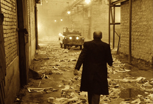
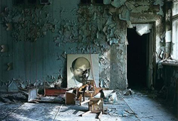
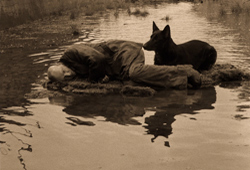
Stalker is a 1979 science fiction art drama film directed by Andrei Tarkovsky with a screenplay written by Boris and Arkady Strugatsky, loosely based on their 1972 novel Roadside Picnic. The film combines elements of science fiction with dramatic philosophical and psychological themes.
The film tells the story of an expedition led by a figure known as the "Stalker" (Alexander Kaidanovsky), who takes his two clients - a melancholic writer (Anatoly Solonitsyn) seeking inspiration, and a professor (Nikolai Grinko) seeking scientific discovery - to a mysterious restricted site known simply as the "Zone", where there supposedly exists a room which grants a person's innermost desires.
When Stalker was released by Goskino in May 1979, it garnered mixed reviews initially before receiving overwhelmingly positive reviews over the following years, thus becoming a near cult film with many praising Tarkovsky's directing, visuals, themes and screenwriting. The film sold over 4 million tickets worldwide, mostly in the USSR, against a budget of 1 million Soviet rubles.
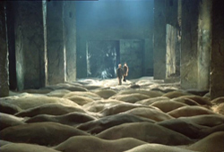
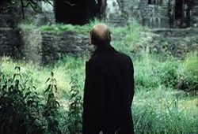
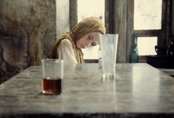
Production designer, Rashit Safiullin, recalled that Tarkovsky spent a year shooting a version of the outdoor scenes of Stalker. However, when the crew returned to Moscow, they found that all of the film had been improperly developed and their footage was unusable. The film had been shot on new Kodak 5247 stock with which Soviet laboratories were not very familiar. Even before the film stock problem was discovered, relations between Tarkovsky and Stalker's first cinematographer, Georgy Rerberg, had deteriorated. After seeing the poorly developed material, Tarkovsky fired Rerberg. By the time the film stock defect was discovered, Tarkovsky had shot all the outdoor scenes and had to abandon them. Safiullin contends that Tarkovsky was so despondent that he wanted to abandon further work on the film.
After the loss of the film stock, the Soviet film boards wanted to shut the film down, but Tarkovsky came up with a solution: he asked to be allowed to make a two-part film, which meant additional deadlines and more funds. Tarkovsky ended up reshooting almost all of the film with a new cinematographer, Alexander Knyazhinsky. According to Safiullin, the finished version of Stalker is completely different from the one Tarkovsky originally shot. The documentary film Rerberg and Tarkovsky: The Reverse Side of Stalker by Igor Mayboroda offers a different interpretation of the relationship between Rerberg and Tarkovsky. Rerberg felt that Tarkovsky was not ready for this script. He told Tarkovsky to rewrite the script in order to achieve a good result. Tarkovsky ignored him and continued shooting. After several arguments, Tarkovsky sent Rerberg home. Ultimately, Tarkovsky shot Stalker three times, consuming over 5,000 metres (16,000 ft) of film. People who have seen both the first version shot by Rerberg (as Director of Photography) and the final theatrical release say that they are almost identical.
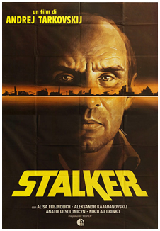
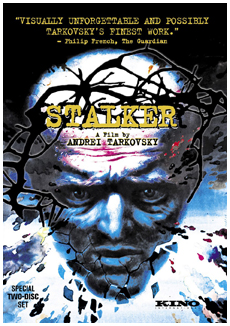
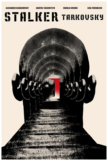
The central part of the film, in which the characters travel within the Zone, was shot in a few days at two deserted hydro-power plants on the River Jägala near Tallinn, Estonia. The shot before they enter the Zone is an old Flora chemical factory in the center of Tallinn, next to the old Rotermann salt storage (now Museum of Estonian Architecture), and the former Tallinn power plant, now Tallinn Creative Hub, where a memorial plate of the film was set up in 2008. Some shots within the Zone were filmed in Maardu, next to the Iru power plant, while the shot with the gates to the Zone was filmed in Lasnamäe, next to Punane Street behind the Idakeskus. Other shots were filmed near the Tallinn–Narva highway bridge on the River Pirita.
Like Tarkovsky's other films, Stalker relies on long takes with slow, subtle camera movement, rejecting the use of rapid montage. The film contains 142 shots in 163 minutes, with an average shot length of more than one minute and many shots lasting for more than four minutes. Almost all of the scenes not set in the Zone are in Sepia or a similar high-contrast brown monochrome.
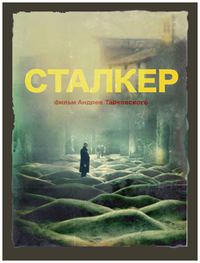
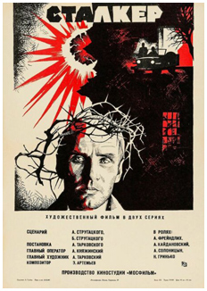
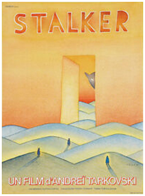
Several people involved in the film production, including Tarkovsky, died from causes that some crew members attributed to the film's long shooting schedule in toxic locations. Sound designer Vladimir Sharun recalled: "We were shooting near Tallinn in the area around the small River Jägala with a half-functioning hydroelectric station. Up the river was a chemical plant and it poured out poisonous liquids downstream. There is even this shot in Stalker: snow falling in the summer and white foam floating down the river. In fact it was some horrible poison. Many women in our crew got allergic reactions on their faces. Tarkovsky died from cancer of the right bronchial tube. And Tolya Solonitsyn too. That it was all connected to the location shooting for Stalker became clear to me when Larisa Tarkovskaya died from the same illness in Paris."
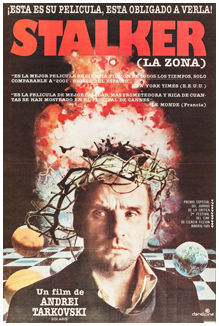
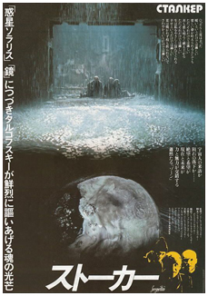
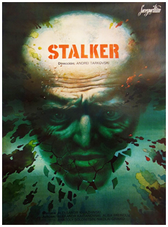